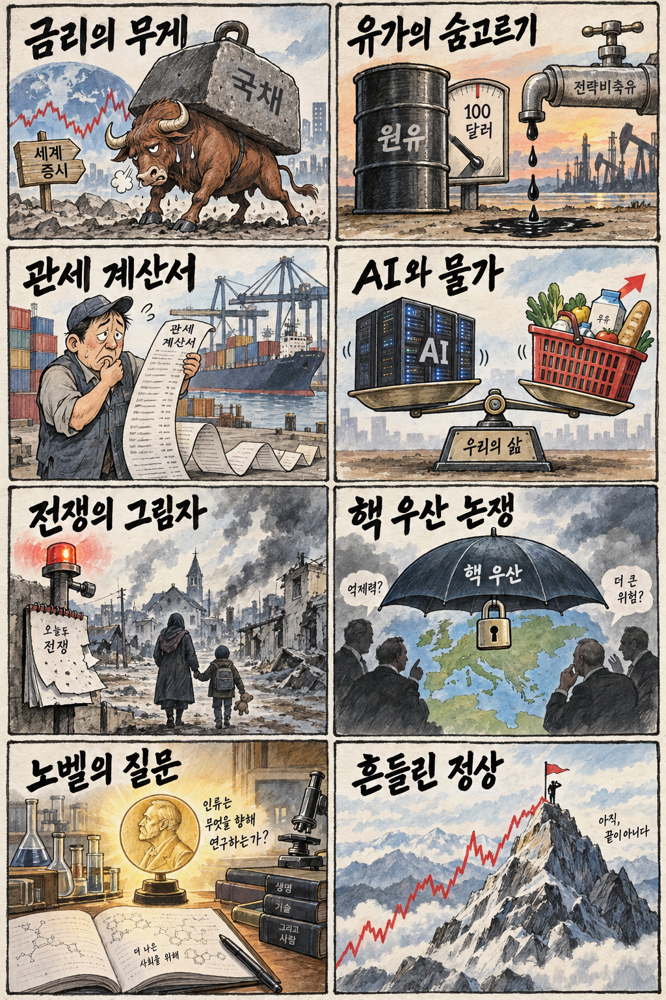
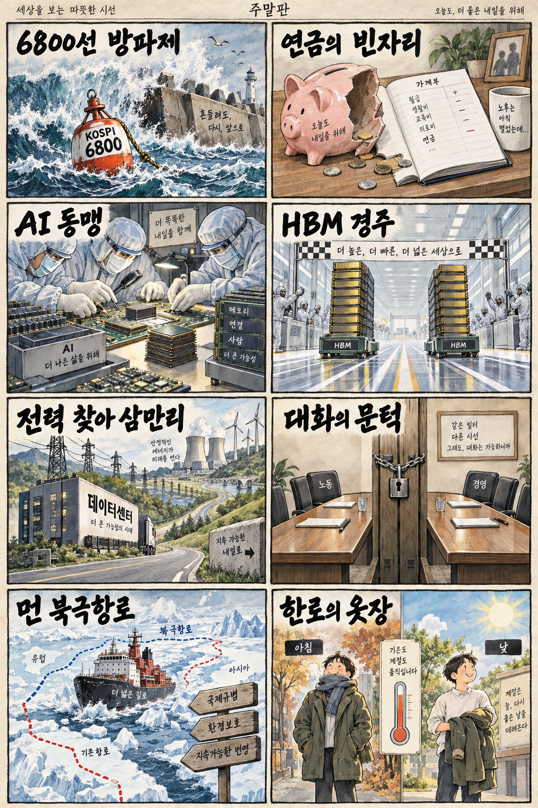

01
마이크론 · 1017.37→1088.00달러 · +6.94%
내용요약 시가 대비 +6.94%로 조사한 대형 기술주 가운데 가장 강했습니다.
예상여파 국내 메모리 투자심리에는 우호적이지만 개별 수급과 삼성전자 실적 발표를 함께 확인해야 합니다.
MORNING_BRIEFING_20261008
작성 시각: 2026-10-08 06:37 KST · 직전 미국 정규장과 2026-10-08 KST 당일 공개 기사 기준
직전 미국 정규장인 10월 7일 뉴욕증시는 다우 -0.66%, S&P 500 -0.22%, 나스닥 -0.22%로 동반 하락했습니다. 사상 최고치 이후 국채금리 부담이 커지며 차익실현이 나타났고, 종목별로 메모리·서버는 강했지만 사이버보안과 산업재는 약했습니다. 한국 증시는 전날 KOSPI와 KOSDAQ이 모두 2% 안팎 하락한 뒤라 삼성전자 잠정실적, 외국인 수급과 6,800선 방어를 확인해야 합니다.
| 지수 | 종가 | 등락률 | 한국 증시 시사점 |
|---|---|---|---|
| 다우존스 | 51,179.87 | -0.66% | 국채금리 상승과 위험선호 둔화는 한국 증시에 부담 |
| S&P 500 | 7,801.77 | -0.22% | 국채금리 상승과 위험선호 둔화는 한국 증시에 부담 |
| 나스닥 종합 | 27,538.69 | -0.22% | 기술주 차익실현과 금리 부담은 국내 성장주에 경계 신호 |
국채금리 부담으로 미국 3대 지수가 최고치 부근에서 동반 반락했습니다.
조사 종목 중 시가 대비 가장 강했지만 반도체 전반은 종목별 차별화가 컸습니다.
전날 -1.98%, KOSDAQ -2.34%로 동반 조정받아 6,800선 수급 확인이 우선입니다.
실적 이벤트와 금리 부담, 검증 표본 부족으로 강제 추천 없이 관망합니다.
10월 7일 보고서는 공식 추천을 내지 않았습니다. 게시 당시 판단을 유지하며 사후 종목을 추가하지 않습니다.
| 시장 | 종가 | 등락률 | 기준 |
|---|---|---|---|
| KOSPI | 6,803.90 | -1.98% | 10월 7일 정규장 · 시가 대비 -0.88% |
| KOSDAQ | 898.43 | -2.34% | 10월 7일 정규장 · 시가 대비 -2.07% |
| 다우존스 | 51,179.87 | -0.66% | 미국 10월 7일 정규장 |
| S&P 500 | 7,801.77 | -0.22% | 미국 10월 7일 정규장 |
| 나스닥 종합 | 27,538.69 | -0.22% | 미국 10월 7일 정규장 |
마이크론은 시가 대비 +6.94%로 조사 종목 중 가장 강했습니다.
슈퍼마이크로 +5.69%, 아마존 +2.30%로 시가 대비 상승했습니다.
크라우드스트라이크는 시가 대비 -4.14%로 큰 폭 하락했습니다.
캐터필러는 시가 대비 -3.80%로 금리 부담 속 약세를 보였습니다.
내용요약 시가 대비 +6.94%로 조사한 대형 기술주 가운데 가장 강했습니다.
예상여파 국내 메모리 투자심리에는 우호적이지만 개별 수급과 삼성전자 실적 발표를 함께 확인해야 합니다.
내용요약 시가 대비 +5.69%로 서버 하드웨어 수요 기대가 주가에 반영됐습니다.
예상여파 인공지능 서버 공급망에는 긍정적이나 변동성이 큰 종목이어서 국내 연결주의 추격은 경계해야 합니다.
내용요약 시가 대비 +2.30%로 대형 플랫폼주 중 상대강도를 보였습니다.
예상여파 클라우드 투자 기대를 지지하지만 미국 지수 전반의 약세와 국채금리 부담은 남아 있습니다.
내용요약 시가 대비 -4.14%로 조사 종목 중 낙폭이 가장 컸습니다.
예상여파 보안 수요의 장기 성장과 별개로 고평가 성장주의 금리 민감도를 보여줍니다.
내용요약 시가 대비 -3.80%로 산업재 대형주가 약세를 보였습니다.
예상여파 경기·금리 우려가 설비투자주에 번질 수 있어 국내 기계업종도 환율과 수주를 따로 봐야 합니다.
미국 지수의 동반 하락과 국채금리 부담은 국내 성장주에 경계 요인입니다. 반면 마이크론과 슈퍼마이크로의 강세, AMD의 한국 협력 보도는 메모리·AI 서버 투자심리를 지지할 수 있습니다. 전날 KOSPI는 시가 대비 -0.88%, KOSDAQ은 -2.07%로 밀렸으므로 삼성전자 잠정실적의 질, 외국인 선물 수급과 KOSPI 6,800선 방어를 먼저 확인해야 합니다.
오늘은 추천 없음 — 현금 관망
06:30 KST 장전에는 당일 시가와 호가 유동성이 형성되지 않았고 삼성전자 실적 이벤트와 국채금리 변수가 큽니다. 전일까지의 외국인·기관 수급, 컨센서스 변화, 공식 촉매, 30건 이상 보정 표본을 모두 갖춰 종합점수 75점·상승확률 60%·예상 손익비 1.5를 동시에 검증한 후보가 없습니다.
관심 연결종목 HBM·AI 서버·원전 전력기기 관련주는 관찰 대상일 뿐 매수 추천이 아닙니다. 실적 확인 전 예상 갭 상승을 추격매수하지 않습니다.
총액보다 반도체·HBM 수익성과 향후 전망을 확인합니다.
외국인 현·선물 수급과 저점 방어 여부를 함께 봅니다.
연준의 물가 경계가 금리와 성장주에 이어지는지 점검합니다.
비축유 방출과 한미 관세 협상의 공식 내용을 확인합니다.
핵심 요약: AMD의 한국 공급망 협력, 엔비디아의 모델 투자, 삼성전자 실적 발표와 빅테크의 원전 전력 조달이 칩·모델·전력 경쟁을 동시에 보여줍니다. 기대만 좇기보다 인증·계약·실제 이익을 구분해야 합니다.
내용요약 AMD의 인공지능 칩 공급망에 삼성전자와 SK하이닉스가 참여하며 HBM4 경쟁이 본격화한다는 당일 보도입니다. 리사 수 회장의 방한과 맞물려 메모리·패키징 협력이 주목받았습니다.
예상여파 국내 반도체 공급망에는 우호적이지만 고객 인증, 실제 공급량과 매출 인식 시점이 확인되기 전까지 기대와 실적을 구분해야 합니다.
내용요약 엔비디아가 앤스로픽에 대규모 투자를 추진하며 인공지능 모델과 컴퓨팅 인프라의 동맹을 강화한다는 당일 보도입니다.
예상여파 칩·클라우드·모델 사업자의 결합이 빨라질 수 있으나 투자 조건과 독립성, 특정 인프라 의존 위험도 함께 살펴야 합니다.
내용요약 삼성전자가 3분기 잠정실적을 발표할 예정이며 메모리 가격 상승으로 기록적인 분기 영업이익 가능성이 거론된 당일 보도입니다.
예상여파 반도체 업황 기대에는 긍정적이지만 높아진 눈높이와 실제 사업부별 이익, 향후 HBM 공급 전망이 주가 반응을 가를 수 있습니다.
내용요약 구글이 미국 원전기업과 대규모 전력구매계약을 맺어 인공지능 데이터센터 전력 수요에 대비한다는 당일 보도입니다.
예상여파 원전·송배전·냉각 설비의 장기 수요에는 우호적이지만 인허가, 공급 개시 시점과 자본비용을 함께 봐야 합니다.
내용요약 제조 현장에서 피지컬 인공지능 활용이 늘면서 랜섬웨어 피해 위험도 커지고 있다는 당일 보도입니다.
예상여파 산업 제어망 보안과 접근권한 관리, 백업·복구 투자가 필수 비용으로 확대될 가능성이 있습니다.
핵심 요약: 국채금리와 물가 경계가 금융시장을 누르는 가운데 우크라이나 전쟁과 유럽 안보 위험이 이어졌습니다. 유가 하락은 비용 부담을 덜 수 있지만 관세 협상과 지정학 변수의 방향은 아직 열려 있습니다.
내용요약 러시아의 공습으로 우크라이나 민간인 사망자가 발생했다는 당일 보도입니다. 전쟁 장기화 속 민간 기반시설과 주민 피해가 이어지는 상황입니다.
예상여파 추가 공습과 대응 수위에 따라 유럽 안보, 에너지와 곡물 운송의 불확실성이 다시 커질 수 있습니다.
내용요약 미국 연방준비제도 내부에서 유가, 인공지능 투자와 관세가 물가를 자극할 수 있다는 평가가 나왔다는 당일 보도입니다.
예상여파 금리 인하 기대가 약해지면 성장주 밸류에이션과 신흥국 자금 흐름에 부담이 될 수 있어 국채금리를 함께 봐야 합니다.
내용요약 미국 대통령이 한국의 관세 인하에는 대가가 필요하다고 언급하고 조선업 투자를 거론했다는 당일 보도입니다.
예상여파 대미 투자와 통상 협상의 조건이 자동차·철강·조선 공급망에 직접 영향을 줄 수 있어 공식 합의문 확인이 중요합니다.
내용요약 리투아니아에서 핵무기 배치 허용 가능성이 거론됐다는 당일 보도입니다. 유럽의 억지력과 안보 논쟁이 한층 커지는 흐름입니다.
예상여파 러시아와 유럽 간 긴장이 높아지고 국방비·에너지 안보 부담이 장기화할 수 있습니다.
내용요약 국제에너지기구의 비축유 방출 가속 보도와 함께 유가가 하락해 브렌트유가 배럴당 100달러 선에 접근했습니다.
예상여파 운송·화학 업종의 비용 부담은 완화될 수 있지만 지정학 위험과 실제 방출 물량에 따라 변동성이 이어질 수 있습니다.

핵심 요약: 전날 증시 조정 뒤 국민연금과 외국인 수급이 중요해졌고, AMD 방한과 삼성전자 실적이 반도체 방향을 가를 핵심 변수입니다. 산업정책 인선, 노사정 대화와 큰 일교차도 함께 점검합니다.
내용요약 국민연금 기금 평가액이 시장 조정으로 크게 감소했다는 당일 보도이며 국내 주식 수급에 미칠 영향이 주목됐습니다.
예상여파 단기 평가손실과 실제 매도는 구분해야 하며 연기금의 자산배분, 환헤지와 국내주식 비중 조정 여부가 핵심입니다.
내용요약 AMD 인공지능 칩 공급망에 삼성전자와 SK하이닉스가 합류하며 HBM4 협력 기대가 커졌다는 당일 보도입니다.
예상여파 반도체 투자심리에는 우호적이지만 잠정실적 발표와 고객 인증, 공식 공급계약을 확인하며 과도한 추격을 경계해야 합니다.
내용요약 대통령실 경제수석 인선에서 산업정책 경험이 부각되며 경제정책 무게중심 변화가 조명됐다는 당일 보도입니다.
예상여파 산업·통상 현장 대응이 강화될 수 있지만 실제 정책 우선순위와 예산, 부처 간 조정 결과를 확인해야 합니다.
내용요약 민주노총의 노사정 대화 복귀 안건이 내부 반대로 표결에 이르지 못했다는 당일 보도입니다.
예상여파 근로시간·임금·산업전환 논의가 지연될 수 있어 향후 재논의 일정과 정부·경영계 대응이 중요합니다.
내용요약 절기상 한로인 오늘 전국이 대체로 맑고 아침 최저 6도까지 내려가며 낮에는 26도까지 오를 수 있다는 당일 예보입니다.
예상여파 15도 안팎의 큰 일교차에 대비해 겉옷을 준비하고 건조한 지역의 화재·호흡기 관리에 유의해야 합니다.
